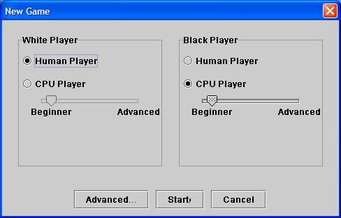

Back to Help Contents
Starting a new gameTo start a new game, select "New Game" from the Game Menu. You will receive the following screen:  Using this screen you can select the black and white players and set the difficulty level. To start the game, click on Start! If you would like to start a new game without changing the players, you can simply select Restart from the Game menu. Back to Help Contents |